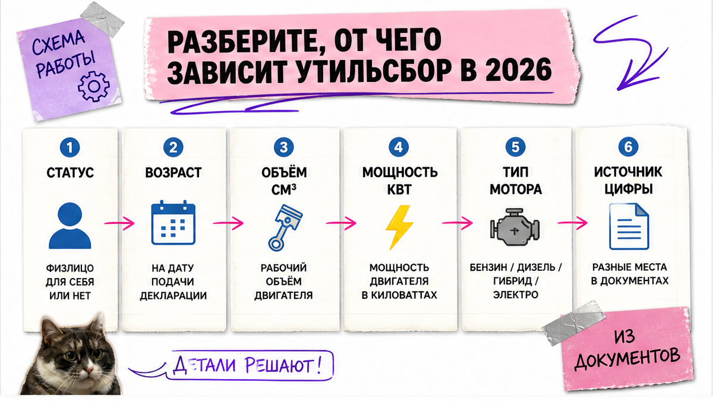
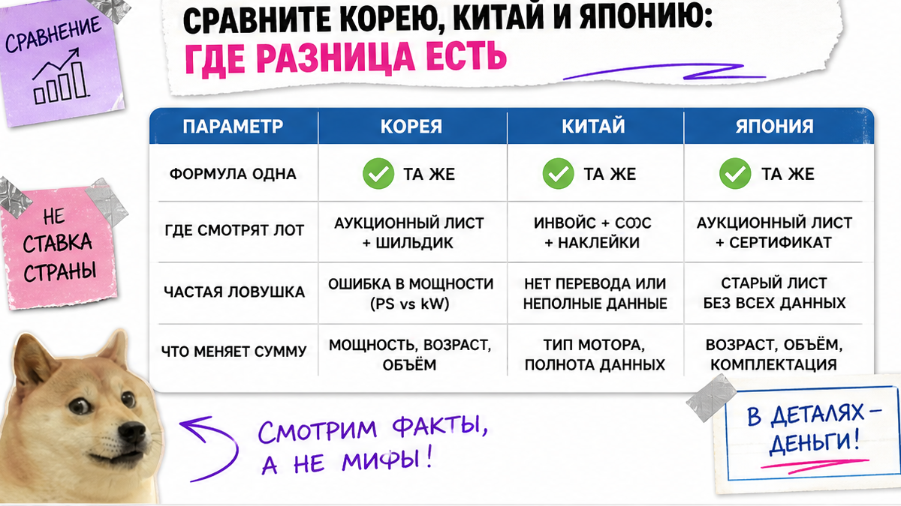

Алексей из Новосибирска выбрал "почти ту же" Camry или Santa Fe мощнее 160 л.с.: мол, из Кореи и Японии утильсбор один. В бюджет заложил чужие "три-пять тысяч" со скрина – и перед депозитом узнал, что коммерческий коэффициент съедает запас на доставку. Боль типичная: посчитать утильсбор на авто 2026 "на глаз" и переплатить из-за одной лишней л.с. Проверьте пять полей до оплаты – и вы сможете понять, льгота это или коммерция, ещё до депозита.
Коротко по делу: При прямом ввозе в РФ формула утильсбора одна для Кореи, Китая и Японии – страну не путайте со ставкой. Считают от статуса, возраста, объёма и мощности в кВт из документов. Льгота физлица – ориентир 3 400 / 5 200 ₽ при личном пользовании, объёме до 3 000 см³ и мощности до 160 л.с. (117,68 кВт). Соберите пакет полей, сверьте расчёт в каталоге – и получите одну цифру по лоту, а не три чужих скрина.
Мы в Авто-Сейлс во Владивостоке часто видим ловушку: человек выбирает страну "ради дешёвого утиля", а спорит уже с цифрой в документах. На пальцах: утильсбор – обязательный платёж при оформлении машины в России. Для легковых M1 база 20 000 ₽ умножается на коэффициент. Коэффициент зависит от года подачи расчёта и вашей ситуации, а не от Encar, японского аукциона или китайского прайса.
Сюрприз: соседние комплектации одной модели могут разъехаться на сотни тысяч рублей из-за порога 160 л.с. / 117,68 кВт. А тексты про "закрытие ЕАЭС с 1 апреля 2026" до сих пор в выдаче – хотя это проект на согласовании, не правило прямого импорта из Азии. Итоговый результат для вас – ясный фильтр "льгота / не льгота" до денег.

Начните не с случайного калькулятора, а с паспорта машины и статуса. Сделайте выписку полей из карточки лота – для расчёта утильсбора на авто 2026 важны:
Льготный контур физлица при выполнении условий даёт ориентир 3 400 ₽ (до 3 лет) и 5 200 ₽ (старше 3 лет). Коммерческий контур считает другие коэффициенты по шкале постановления – без "таблицы миллионов" в тексте: сумма привязана к году подачи и конкретной машине.
Сделайте: выписать шесть полей и пометить источник. Не делайте: решать по чужому скрину без даты и без ваших кВт. Используйте документы, а не баннер Encar.
Схема до депозита:
Карточка лота → поля чеклиста → статус физлица или коммерция → порог мощности → расчёт в каталоге → "брать / искать слабее 160 л.с. / отказаться"

Типичная ошибка: "из Кореи утильсбор дешевле, чем из Японии или Китая". На практике при прямом оформлении в РФ формула одна. Страна влияет на документы, логистику и типичные моторы – не на "корейскую скидку".
| Параметр | Корея | Китай | Япония |
|---|---|---|---|
| Формула при прямом ввозе | Та же (база × коэффициент) | Та же | Та же |
| Где смотрят лот | Encar | Прайс / экспортный лист | Аукционный лист |
| Частая ловушка | Kia/Hyundai выше 160 л.с. | EV и гибриды: 30-минутная мощность | "Почти та же" Toyota с другим мотором |
| Что меняет сумму | Документы + статус | Документы + тип мотора | Документы + возраст |
Итоговый вердикт: Выберите страну под модель, руль и логистику через Владивосток – не под миф о ставке. Для льготы сначала фильтруйте мощность и объём.
Сделайте: сравнивать комплектации одной модели по кВт и объёму. Не делайте: менять страну только ради утильсбора. Избегайте "флага на капоте" как аргумента ставки.
Льготный утильсбор – не подарок "за паспорт". На пальцах: вы физлицо, машина для себя, регистрация на себя, пороги соблюдены, без перекупного конвейера. Ниже – короткий чеклист.
Хотя бы один пункт "не проходит" – закладывайте коммерческий сценарий, не чужой скрин на 5 200 ₽. Возраст авто фиксирует льготный коэффициент 0,17 или 0,26.
Сделайте: пройти чеклист до депозита. Не делайте: надеяться на льготу при 161 л.с.
Например, баннер "220 л.с." принимают за строку расчёта. В 2026 ориентир другой: киловатты из документов. Письмо ФНС по M1 прямо указывает мощность в кВт.
30-минутная мощность – не "рывок на обгоне", а документированная устойчивая отдача. Путать её с маркетинговым пиком – быстрый способ сломать бюджет на китайском EV.
В реальном проекте подбора Camry 2.0 vs 2.5 или две комплектации Santa Fe часто решает не салон, а порог 117,68 кВт. Отдельная ловушка – план "возьму по льготе и продам через полгода": срок владения тоже часть условий.
Сделайте: спросить, какая мощность пойдёт в расчёт и из какого документа. Не делайте: складывать пиковые цифры баннера. Избегайте сделки "на глаз", если гибрид или EV.
Часть текстов пишет, будто с 1 апреля 2026 "всё изменилось" для физлиц через ЕАЭС. По сигналу Минпромторга (Интерфакс, 31.03.2026) проект был на согласовании и не вступил. Путать его с прямым ввозом из Азии через Владивосток – ломать план сделки из-за чужого заголовка.
Что уже в силе: ПП № 1713 от 01.11.2025 к № 1291 действует с 01.12.2025 и усиливает роль кВт. Перечень коэффициентов сверяйте по актуальной редакции ПП № 1291 (в правовых базах есть ред. от 06.02.2026).
Сделайте: опираться на дату подачи расчёта и действующий текст. Не делайте: закладывать непринятые правила ЕАЭС в бюджет прямого импорта. Используйте свежую редакцию, а не заголовок из выдачи.
Калькуляторы в выдаче часто расходятся: старая сетка или другая трактовка гибрида. Критерий успеха: пять полей заполнены, ясно "льгота / не льгота", есть свежий расчёт по лоту до депозита.
Актуальный расчёт – в каталоге Авто-Сейлс. Форм на странице нет: цифры живут в каталоге, детали – в Telegram avtosales125.
Сделайте: отправить пакет до депозита. Не делайте: бронировать "пока не ушла", не зная контур льготы.
После шагов вместо страха "утильсбор на авто 2026 меня разорит" появляется фильтр комплектации и одно свежее число до депозита. Выберите комплектацию слабее порога или откажитесь – уже с понятным результатом, а не с чужим скрином.
Материал проверен: Редакция Авто-Сейлс (эксперты по авто под заказ из Японии, Кореи и Китая).
Достоверность: сверка с ПП РФ № 1291 (ред. от 06.02.2026) и № 1713 от 01.11.2025, письмом ФНС СД-4-3/10006@ о мощности в кВт, сигналом Минпромторга через Интерфакс по проекту ЕАЭС на 01.04.2026; расчёт по лоту – в каталоге, без статичной таблицы сумм.
При прямом ввозе в РФ – да: база и коэффициент зависят от машины и статуса плательщика, не от страны покупки. Сравнивайте документы и комплектацию.
Соберите пять полей и запросите расчёт в каталоге Авто-Сейлс по конкретному лоту. Не опирайтесь на один скрин без даты редакции.
Физлицо, личное пользование, объём до 3 000 см³, мощность до 160 л.с. (117,68 кВт), регистрация на себя, не чаще одного льготного ввоза в 12 месяцев и без продажи раньше года с даты ТПО. Иначе – коммерческий сценарий.
Не берите пик с баннера. Для EV и ряда последовательных гибридов – 30-минутная мощность; для многих параллельных – сумма ДВС и 30-минутной мощности электромотора по документам.
Проект единой формулы через ЕАЭС на эту дату не вступил. На прямой импорт из Азии ориентируйтесь на ПП № 1291 / № 1713 и год подачи расчёта.
Сверьте редакцию правил и поля ввода, затем запросите один расчёт по вашему лоту в каталоге. Три скрина без документов – ещё не бюджет.